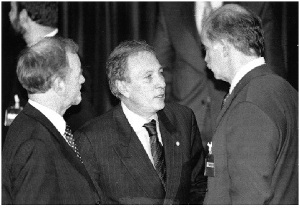
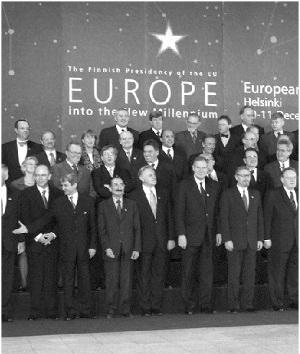

ab sürecinde belirleyici yıl olan 1999 yaklaşırken, Türkiye’nin çalışmaları hızlanarak devam etmekteydi. Bir yandan ab ile, öte yandan ab üyesi ülkelerle temaslar yapılmaktaydı. Büyük-küçük demeksizin, tek tek her üye ülke ile Türkiye’nin ikili ilişkilerinin geliştirilmesine çalışılıyordu. Bu bağlamda, Fransa’nın yanı sıra, Almanya ve İngiltere de Türkiye için fevkalade önemliydi.
a) Almanya, Dün ve Bugün
Almanya ve Türkiye, birbiri için özel bir konuma sahiptir: Birinci Dünya Savaşı’ndaki kader birliği; ekonomik ilişkilerde ve turizmde Almanya’nın yeri; üç milyonu aşkın insanımızın Almanya’da yerleşmiş olması, Türkiye’nin Ortadoğu ve Orta Asya’daki ilişkilerinin Almanya açısından taşıdığı önem vb.
Türk-Alman ilişkilerinde, tarih boyutu her zaman kendini hissettirir; tarih, etkilerini günümüze dek belli ölçüde sürdüren bir güvenin de, güven eksiğinin de, kaynağındadır. İttihatçı Osmanlı yönetiminin ihtirasını ve acemiliğini, işbirlikçiliğini de kullanarak, Türkiye’yi dünya savaşına sürükleyen, Almanya’dır. Yirmi beş bin askeriyle Osmanlı ordularında çarpışan, savaşın ortak sıkıntılarını Türklerle birlikte göğüsleyen de, Almanya’dır. Osmanlı ordusunda görev yapan komutanlarıyla, Moltke’si ve Golç Paşa’sıyla, Liman Von Sanders’iyle, silahlı kuvvetlerin yenileşmesinde büyük işlev taşıyan, gene Almanya’dır. Birinci Dünya Savaşı sırasında Türkiye’ye gelip bakanlıklarda görev alan, silahlı kuvvetlerin içine nüfuz ederek denetim ağı oluşturan, İttihatçı kadrolardan kendisine yandaş ve işbirlikçi odaklar yaratan da Almanya’dır. 19. yüzyılın sonlarında ve 20. yüzyılın ilk kesitinde, Türkiye tarihinin belirleyici yabancı aktörü Almanya olmuştur.
Ünlü Feld Mareşal Moltke, 1836’da gelmiş, orduda ve Anadolu’da incelemeler yapmıştır. Türkiye, Almanya’nın Ortadoğu’ya açılımında, ulaşımında ‘kilit’ konumundadır. 1840’larda birleşmeyi başaran güçlü Almanya, dünyayı İngiltere ve Fransa’ya kaptırmak niyetinde değildir. Almanya, Türklerle birlikte inşa edeceği demiryollarıyla, Türk askeriyle birlikte oluşturacağı silahlı güçle, dünya fütuhatından pay almak hesabındadır. General Von Der Goltz (Golç Paşa), ilk olarak 1883’te, ‘askeri ıslah heyeti’ ile beraber gelmiştir. 1895’e kadar Osmanlı Genel Kurmayı’nın II. Başkanı olarak çalışmıştır. Daha sonra tekrar Türkiye’ye dönen Golç Paşa, Dünya Savaşı’nda I. ve VI. Osmanlı ordularına kumanda etmiştir. Bir başka Alman generali, Liman Von Sanders, yetmiş bir kişiden oluşan ‘Alman Heyet-i Askeriye-i Islahiye’sinin başında gelmiş, uzun süre Türkiye’de kalarak komutanlık üstlenmiş, silahlı kuvvetlerin yeniden yapılanmasında belirleyici rol almıştır. Padişah, kendisine, ‘Müşir’ (mareşal) rütbesi vermiştir. Bu dönemde öteki Batı Avrupa ülkelerinden de uzmanlar gelmişse de (donanmanın ıslahı için İngiltere’den Amiral Limpus, jandarmanın düzenlenmesi işlevi kendisine verilen Fransız general Bauman, vb.), Almanlar, Osmanlı ordusunun yönetimine önce ortak, sonra, büyük ölçüde egemen olmuşlardır.
Golç Paşa, Türkiye’ye ikinci gelişinde (1913) ‘kurtarıcı gibi karşılandığını’ hatıratında anlatmaktadır. ‘Türkiye hududunda yapılan istikbal çok mükemmeldi; bundan çok müteheyyiç oldum. Türkiye toprağındaki ilk istasyonda şarkı söyleyen çocuklar, sonraki istasyonlarda da ihtiram bölükleri, zabitan heyetleri ve birçok halk beni selamladı.’[6] Aynı Golç Paşa, Türkiye’deki ilk görevi sırasında (1883-1895) Alman Başbakanı Prens Bismark’a gönderdiği şifreli mektuplarda, bazı Osmanlı yöneticilerini nasıl satın aldığını şöyle anlatmaktadır:
... Bize pek çok hizmeti dokunan (R), (M), ve (H) paşalardan etkili yardım göreceğimizden şüphe edilemez. Bu paşaları siz de tanırsınız, emirleriniz üzerine şimdiye değin kararlaştırılan paraları kendilerine iki defa vermiş olduğumu biliyorsunuz. İşte bu ödemeler tekrarlandığı takdirde, yukarıda adlarını açıkladığım kişilerin geniş ve önemli yardımlarını göreceğimize eminim. Bir hayli generaller de bizim dostlarımızdır. Muntazam surette kendilerine tahsis olunan paraları almaktadır.[7]
Golç, Alman Feld Mareşal Walderze’ye dünya savaşı döneminde yazdığı mektubunda ise, geleceğe dönük düşüncelerini açıklamaktadır:
... Öte yandan bu askerler (300 bin kişiden oluşan Osmanlı Redif Kuvvetleri) üzerinde doğrudan doğruya nüfuzumuzu kullanarak Osmanlı ordusunun idaresini, evvelkinden ziyade ve artık bir daha geri alınamayacak biçimde, ele geçireceğiz...[8]
İsmet İnönü, yıllar sonra yazacağı hatıratında bu durumu yorumlayacaktır:
... Birinci Dünya Savaşı’nda ordumuza hâkim olan Almanlar, (eğer savaş kazanılsaydı) bir daha geri dönmemek üzere (ülkemize) gelmişlerdi.

İsmail Cem İngiliz Dışişleri Bakanı Robin Cook (solda) ve Yorgo Papandreu ile.
Başta belirtildiği gibi, Almanya, Türkiye açısından hem güvenilir bir ‘kara gün dostudur’, hem Türkiye’nin bölünüp parçalandığı savaşa onu sürüklemiş, sürüklerken gereğinde hileye başvurabilmiş bir ülkedir. Geçmişi bir yana bırakırsak, bu iki ülke her dönemde birbirine ihtiyaç duymuştur. Günümüzde de güçlü ve karşılıklı menfaat ilişkileri söz konusudur. Dış ilişkilerde menfaat, sağlıklı bir ölçüdür. Almanya, Türkiye’nin ab süreciyle en yakından ilgilenen bir ülkedir. Özellikle Helsinki başarısına olumlu ve belirleyici önemde katkıları vardır. Benim Almanya ve kültürüne ilişkin bilgim, sınırlı bir alanda yoğunlaşmıştır; Almanya, önceleri ihtilâlci, sonraları demokrat ya da reformcu sol anlayışların, sosyal demokrasinin, eşanlamıyla demokratik sosyalizmin Avrupa’daki kaynağı ve vatanıdır. Bu bağlamda, benim siyasi düşüncelerimin gelişiminde, Almanların, Alman ekolünün, özellikle de sosyal demokrasinin öncüleri olan Bernstein ve Kautsky’nin, Willy Brandt’ın önemli yeri vardır. Sosyal Demokrasi’ye ilişkin araştırmalarımda ve kitaplarımda bu üç siyasal düşünürün eserlerine geniş yer vermiştim. Almanya, aynı zamanda, solun öncü teorisyenleri Marx ve Engels’in memleketidir; bu iki düşünür aracılığıyla da, Alman siyasal kültürünü bir ölçüde tanıma imkânım olmuştu. Siyasal boyut dışında, Almanya’nın insanlığın ortak kültürüne katkısı olan müzisyenlerini, düşünürlerini, yazarlarını tabii ki bilirim de, bu, ‘Alman kültürünü bilmek’ iddiasının hayli uzağındadır.
Türkiye’nin Almanya ile yakın dönemdeki ilişkileri, iki ayrı bölümde incelenebilir. İlki, Hıristiyan Demokratların iktidarda bulunduğu, Kinkel’in Dışişleri Bakanı sıfatıyla benim muhatabım olduğu yıllar. İkincisi, Sosyal Demokratların, Schröder’in iktidarı ve Fischer’in Dışişleri Bakanlığı. Özdeki değişiklik belki çok farklı değildi ama, biçimde, ifadede ciddi farklılık oldu. Bu, bir bakıma, iki bakan meslektaşımın, birbiriyle taban tabana zıt özellikler taşımasından kaynaklanmıştı.
Dışişleri Bakanı Kinkel ile, onun bakanlık görevinden ayrılmasından sonra dost olduk, görüştük, haberleştik de, bakanlığı sırasında her nedense belli bir mesafe aramızda hep var oldu. Nedeni, gene öze ilişkin değildi, ama biçime, ifade tarzına ilişkindi. Yoksa, sonraki tarihlerde daha yakından göreceğim gibi, Kinkel iyi ve candan bir dosttu. Biçime, ifade tarzına gelince: Daha önce bahsetmiştim, Kinkel, 1996’da Türkiye’yi ziyareti sırasında, tbmm Dış İlişkiler Komisyonu’nda bir konuşma yapmıştı. Kinkel’in söylediklerinin hemen hepsi doğruydu; açık ve net olarak, Türkiye’nin, ab’ye neden ‘... görülebilir bir gelecekte’ aday olamayacağını, aradaki engellerin neler olduğunu, anlatmıştı. Bunlara bir itirazım yoktu da, Kinkel’in ‘tarzı’ beni rahatsız etmişti. Doğrusu, ‘... Kinkel’e o sırada haksızlık mı ettim, benimki aşırı bir duyarlılık mıydı...’ diye, şimdi tereddüt geçirmekteyim. Özellikle muhataplarını küçümsemek gibi bir niyet herhalde taşımayan ama belli alışkanlıklardan kaynaklanmış bir üslûptu, Kinkel’inki. Ama beni rahatsız etmişti. İzleyici milletvekillerine sanki yukarıdan bakan –ya da bana öyle gelen– bir konuşma yapmıştı.

Kinkel’le ilk görüşmemiz, Almanya’ya resmi ziyaretimde, 1997 Ekim ayında gerçekleşti. O sırada başkent henüz Berlin’e taşınmamıştı. Bonn’daki Dışişleri Bakanlığı’nda bir araya geldik. Ben, özellikle Almanya’daki insanlarımızın sorunlarını gündeme getirdim. Onların, Alman toplumuna katılmasını (entegrasyon) öteden beri savunmuş, bu doğrultuda yazılar yazmıştım. O dönemde, yurtdışındaki Türklere hâlâ bir ‘döviz kaynağı’ gibi bakmak, onların Türkiye’ye bağlılığını tek ve kendi başına yeterli amaç olarak görmek usuldendi. Türkiye sevgisini canlı tutmanın büyük önemini ben de savunmaktaydım, ancak, Almanya’da yaşayan insanlarımızın ‘mutluluğunu’, mutlu olmasını, çocuklarını mutlu yetiştirmesini aynı şekilde önemsemekteydim. Kinkel’e, üç milyona yakın Türk’ün, çocuklarını Alman çocuklarıyla eşit koşullarda yetiştirmelerinin öneminden söz ettim. Bu hedefe yönelmenin yöntemi, kendi kimliğini kaybetmeksizin Alman toplumuna entegre olmaktı. Oysa mevcut koşullarda hem ağır bir eşitsizlik söz konusuydu, hem de eşitsizliğin sürekliliği. Alman Dışişleri, bu konuda ne düşünüyordu? Türkiye’den gelen yaklaşımı önemsiyorlardı. Söylediklerimizi, sorunların çözümüne yeni bir yaklaşım, yeni bir boyut olarak görmekteydiler. Biz, ortak bir komisyonun iki bakanlık arasında oluşturulmasını, öteki bakanlıklardan, kurumlardan gerekirse takviye alınmasını ve eşitsizlikleri azaltacak, entegrasyonu hızlandıracak programların şekillenmesini önerdik. Öneri benimsendi; Alman tarafıyla bu ilk temastan çıkan en önemli sonuç da sanırım bu olmuştu.
Kinkel’in Türkiye-ab ilişkilerine bakışını, gerçekçi ama aynı zamanda moral bozucu olan görüşlerini bildiğim için (Türkiye’nin görülebilir bir gelecekte ab sürecinde gelişemeyeceği) bu konuyu açmadım. Her konuştuğu Türk yetkilinin kendisinden ilk iş olarak ab konusunda destek istemesine alışık olan Kinkel’in, bu yaklaşıma biraz şaşırdığını zannediyorum. Konuyu kendisi açtı, Almanya’nın her zaman Türklerin yanında olduğunu, ancak ab içinde Türkiye’ye karşı bir havanın varlığını, ‘... görülebilir gelecekte ümit yok...’ diye özetlediği düşüncelerini sıraladı. Ben de, ab konusunda geliştirdiğimiz yeni yaklaşımları, olaya sadece ‘Türkiye ab’den neler kazanıyor’ diye değil, ‘Türkiye ab’ye neler kazandırıyor’ açısından bakılması gereğini anlattım. Bu konuşmaların bir bölümü kayda geçerken, bir bölümü de, dostça gelişen bir sohbet çerçevesinde ortaya konmaktaydı. Sonuç olarak, bu ilk Almanya ziyareti, ‘yeni’ Türk bakanın geçmiş bakanlarınkinden farklı görüşlerinin Alman Dışişleri yönetimince birinci elden öğrenilmesini sağladı, yararlı oldu. Almanya, belirttiğim gibi, Türkiye’nin ab sürecinde ‘kilit ülke’ konumundadır. Hem Türkiye ilişkilerinin kendi açısından stratejik önemi hem de ab’nin öteki üyeleri üzerindeki ciddi etkinliği, Helsinki’ye uzanan süreçte Almanya’ya belirleyici bir işlev tanıyacaktır. Kinkel’in ardından bakanlık görevini üstlenen Fischer’den, daha sonra söz edeceğim.
b) İngiltere: Türkiye Her Zaman Önemlidir
ab içinde bir başka belirleyici ülke, İngiltere’dir. İngiltere açısından Türkiye her zaman stratejik önceliğe sahiptir. İngiltere’nin tarih sürecindeki değerlendirmesinde, Türkiye genellikle hasım olarak, engel ve tehlike olarak görülmüştür: Türklerin Ortadoğu’daki gücü hattâ kısmi egemenliği, İngiltere’nin ‘Hindistan yolunu’ tehdit edebilecek bir etkendir. Birinci Dünya Savaşı’nda, Türkiye, İngiltere’ye karşı savaşmıştır; Ortadoğu’daki mücadelenin İngiltere için bir özelliği de, Hindistan yolunun güvenlik altına alınmasıdır. Çanakkale saldırısı, İngiltere’nin İstanbul’a egemen olmak ihtiyacıyla, bir başka ifadeyle, Rusya’nın İstanbul’a egemen olmasını engellemek amacıyla gerçekleşmiştir. Savaş sonrasında İstanbul’u işgal eden, yabancı işgal güçlerinin bir ölçüde eşgüdümünü sağlayan İngiltere’dir. Gene İngiltere, savaş sonrasının Mondros Mütarekesi’nde ve Sevr Anlaşması’nda, Paris Barış Kongresi’nde (1919), müttefikler adına ‘Osmanlı sorununu çözmekle görevli’ devlet özelliğindedir. Yunan isyanının baş destekçisi olmaktan, Ortadoğu halklarını Türkiye’ye karşı kışkırtmaktan, düzmece bir tarih yorumunun oluşturulmasına, Lawrence’ın yalanlarına, zaten acı olan Ermeni olaylarına ilişkin haberlerin, müthiş bir abartıyla dünyaya taşınmasına kadar 19. yüzyılın ve 20. yüzyıl başlarının Türkiye aleyhine bütün gelişmelerinde İngiltere’nin belirleyici rolü vardır. Bu uzun süreçte İngiltere’nin Osmanlılara dönük olumlu taktik yaklaşımları hep kısa süreli olmuştur, hemen her zaman, Rusya’nın Boğazlar’a ulaşacağı, İngiltere’nin Doğu yollarını engelleyeceği kaygısından kaynaklanmıştır.
Günümüze baktığımızda, İngiltere ve Türkiye’nin olumlu ilişkileri, nato içinde ve ab’de genellikle işbirliği yaptıkları dikkat çeker. Geçmişin stratejik dengelerindeki kadar olmasa bile, Türkiye, özellikle Ortadoğu, petrol politikaları ve Kıbrıs’taki İngiliz menfaati açısından İngiltere için önemlidir. Buna, gelişen ekonomik ilişkileri de eklemek gerekir. İngiltere’nin Transatlantik (abd-Avrupa) rolü ise, Türkiye’ye verdiği değerin bir başka nedenidir: İngiltere’nin Avrupa ve ab siyaseti, bir bakıma, abd’nin de temsilciliği özelliğindedir; zaman zaman, abd siyasetinin doğrudan uzantısı olarak nitelenir. İngiltere’nin artık tek başına kendi siyasetinin olmadığı, özellikle Irak Savaşı sonrasında İngiliz dış siyasetinin abd odaklarına kendini bağımlı kıldığı öne sürülmüştür. Fransız kamuoyunda, İngiltere’yi, abd’nin Avrupa’daki ‘Truva atı’ olarak değerlendirenler bile vardır. Bu yorumlar abartılı olsa bile, özü itibariyle, İngiliz dış siyasetine güç de kattığı söylenebilir: İngiliz siyasetinin ‘aynı zamanda’ abd siyasetini yansıtması, ona ek bir etkinlik sağlamıştır. İngiltere’yi muhatap alanlar, artık, belirli konularda karşılarında sadece İngiltere’nin değil, Amerika’nın da yer aldığını bilecektir. Öte yandan, İngiliz Dışişleri Bakanlığı, geleneksel olarak son derece etkilidir, düzeylidir, yetenekli diplomatlardan oluşmaktadır.
İngiltere, bu özellikleriyle, Türkiye’nin ab ilişkilerine her zaman destek çıkmıştır. İngiltere’nin, Türkiye’nin adaylığından, üyeliğinden çekinmesi için pek bir neden yoktur. Hele Kıbrıs konusunun İngiliz menfaatiyle çelişmeyen bir mecraya girmiş olmasından sonra, İngiltere’nin ab siyaseti, abd’nin de etki ve katkısıyla, Türkiye’ye daha da güçlü destek olmanın işaretlerini vermiştir.
Türkiye’nin Avrupa Birliği sürecinde ilk dönüm noktası olan Helsinki Zirvesi yaklaşırken, yeni dış siyasetimizin önemli unsurlarını bir araya getiren bir konuşmayı Londra’da yaptım. Türkiye’nin kendi uluslararası işlevini nasıl tanımladığını, Avrasya gerçeğini, ab ve Avrasya hedeflerinin birbiriyle çelişen değil, birbirini güçlendiren hedefler olduğunu anlattım. İki ülke arasındaki ekonomik ilişkileri irdeleyen bir[9]*
Türkiye’nin Hedefi, AB’nin Üyesi ve Avrasya’nın Merkezi Olmaktır
Eğer dış politika ‘güç dengesi’ üzerine bina edilen bir olguysa, bu dengenin doğasının değişmekte olduğu açıktır: Artık, tek başına ‘askeri gücün’ bir ülkenin uluslararası konumunun temel belirleyicisi olduğu bir dünyada yaşamıyoruz. Bu yeni paradigma, temelde ekonomik canlılık ve sürekliliğe dayalı yeni bir güç türünü sahnenin önüne çıkarmaktadır. Dünya küresel bir pazar halini alırken, tarihsel, kültürel ve siyasi birikimlerle desteklenen ekonomik faktörler bir ülkenin gelecek binyıldaki rolünü şekillendirmektedir.
Çağdaş güç oyununun bu nitelikleri göz önüne alındığında, belirleyici unsur, bir ülkenin sahip olduğu karşılaştırmalı (mukayeseli) avantajlarından en üst düzeyde yararlanma yeteneğidir. Türkiye, bir dizi avantajı ile, gelecek on yılların belirleyici bir aktörü olma yolundadır.
Günümüzde Türkiye, Avrasya’da önde gelen siyasi ve ekonomik bir merkezi ve Avrupa Birliği’nin önemli bir üyesi olmayı hedeflemektedir. Kendimiz için öngördüğümüz uluslararası işlev, Avrupa’nın eteklerindeki bir çevre ülkesi olmakla sınırlı değildir. Bizim öngördüğümüz işlev, Avrupa ve Asya boyutuyla belirginleşen Avrasya gerçekliğinde öncü bir role sahip olmaktır.
Bulunduğumuz nokta budur ve bunun nedenleri vardır:
1) Birçok gözlemcinin de belirttiği üzere, önümüzdeki binyılın merkez sahnesi Avrasya olacaktır. Üretim, iletişim ve enformasyon teknolojilerinin gelişimi göz önüne alındığında, Avrupa ile Asya’nın karşılıklı bağımlı ve bağlantılı, entegre bir bütün oluşturacağı ortaya çıkmaktadır. Her iki kıta da, aynı bütünün parçaları olmaktan büyük yarar sağlayacak. Ayrıca, önümüzdeki binyılda ekonomik gelişmenin önemli bir bölümü Asya’da gerçekleşecek; bazı Asya ülkelerinin mevcut ya da potansiyel ekonomik kalkınmasına ilaveten yeni enerji kaynaklarının ve ulaşım koridorlarının ortaya çıkışı belirginleşen bu oluşuma güç katıyor.
2) İkinci bir gözlem değişen siyasal ortamla bağlantılı: Soğuk Savaş sonrası, çok sayıda bağımsız devletin doğuşuna, bazılarının ise bağımsızlığını pekiştirmesine tanık oldu. Bu ‘yeni’ devletler kümesinin –Balkanlar, Kafkaslar veya Orta Asya’daki– hemen tamamı Türkiye’nin ortak bir tarihi, dini ya da dili paylaştığı devletlerdir. Bu durum Türkiye’ye tarihsel ve kültürel boyutları olan yeni bir uluslararası ortam sağlıyor. Ayrıca, bu yeni ulus-devletler, zaman yitirmeksizin ekonomilerini geliştirmeye, yabancı yatırıma ve rekabete açmaya yöneldiler. Türkiye, bu coğrafyalarda uzun geçmişe sahip bir aktör olarak, bu ülkelerin ekonomik açıdan yeniden yapılanmasında yaşamsal bir ortak konumuna geldi.
3) Son olarak, bu stratejik değişim Türkiye’deki yeni bir bilinçle örtüşmektedir: Birlikte yaşanmış bir tarihin ve benzeşen kültür özelliklerinin dış siyasetteki rolü son iki yılda öne çıkarıldı ve bu anlayış her alanda hayata geçirildi. Yüzyıllardır ortak bir devleti ve ortak bir kaderi paylaştığımız yirmiden fazla ülke bulunduğu kaydadeğer bir husustur. Balkanlar’dan Kuzey Afrika’ya, Ortadoğu, Kafkaslar ve Orta Asya’ya uzanan bu geniş sosyopolitik coğrafyada, en dinamik ekonomiye, en gelişmiş silahlı kuvvetlere ve en deneyimli demokrasiye sahip bulunan Türkiye, istikrara katkıda bulunmak ve yeni ‘Avrasya Düzeni’nin yarattığı fırsatlardan yararlanmak için elverişli koşullara sahiptir. Tarihsel ve kültürel nitelikleri ve hem Avrupalı hem Asyalı olan imtiyazlı kimliğiyle, Türkiye, Avrasya’nın stratejik ‘merkezi’ olmak için güçlü bir konumdadır. Bizler kendimizi hem Avrupalı hem Asyalı kabul ediyoruz ve bu çokluğu önemli bir kazanım, birikim olarak görüyoruz.
Bu gözlemler, tahlilimizi toplantınızın konusuna bağlıyor: Son 22 yılın ortalama istatistik verileri ile OECD tarafından belirlenen parametreler, Avrasya’da merkezi bir rol oynamak için sadece tarihsel ya da siyasi yeteneklere değil, aynı zamanda ekonomik araçlara da sahip bir ülkeye işaret etmektedir. Türkiye geçmişte sadece NATO’ya sağladığı stratejik katkı ile tanınırken, şimdi, ekonomik canlılığı, girişimciliği ve dış ticaretiyle ön plana çıkıyor. Ekonomik gelişimiyle ile tarihsel ve kültürel birikimini birlikte değerlendiren ve kullanan yeni dış politika yaklaşımıyla, Türkiye, bölgesel rolünü küresel bir role dönüştürme sürecini başlatmaktadır.
‘Makûl, gerçekçi hedeflerden’ bahsettiğimizi sanıyorum: Yüzlerce yıllık bir medeniyetin; Ortaçağ’ın, çağdaş yüzyıllara dönüşümüne katkı sağlamış bir bilgeliğin; bir yandan özgün bir tarihsel deneyimi diğer yandan cumhuriyet ihtilâlini temsil eden bir ülke ve milletin hedeflerinden söz etmekteyim.
Bu konuyu ele alırken, tarihi, boşa yaşanmamış bir deney olarak görmekteyim. Toplumlarımız, uzak geçmişlerinden günümüze taşıdıkları kendilerine özgü gelişme dinamikleriyle, gelecek binyıla ulaşacaktır.
İngiltere-Türkiye Ekonomik İlişkiler Semineri’nin
açış konuşması, Londra, 3 Eylül 1999
İngilizce aslından özet çeviri
Türkiye, kendi dış siyasetinde İngiltere’ye her zaman önem vermiştir. İngilizlerin dış siyaset hünerini bildiğimizden, bizim dönemimizde de İngiliz diplomasisinin yönelimleri ve tercihleri tarafımızdan dikkatle izlenmiştir. İngiliz Dışişleri Bakanı Robin Cook ile dört yıl kadar birlikte çalıştık. Ciddi bir sosyalist olmanın yanı sıra, tutarlı bir siyasetçiydi. Başbakan Blair’in İngiltere’yi de küçük düşüren Irak politikasına karşı çıktı ve bakanlıktan istifa etti. Görevden ayrılmasından sonra, Albright’ın başlattığı ‘eski dışişleri bakanları’ forumunda Cook’la birkaç kez bir araya geldik. Cook’un yerine atanan Jack Straw ise, çok cana yakın, sempatik bir arkadaşımızdı. Onunla bir yıl kadar birlikte çalıştık. Türkiye ile ab arasında ciddi bir anlaşmazlığa dönüşen Avrupa askeri gücünün oluşumu konusunu, büyük çabalarla birlikte çözdük.